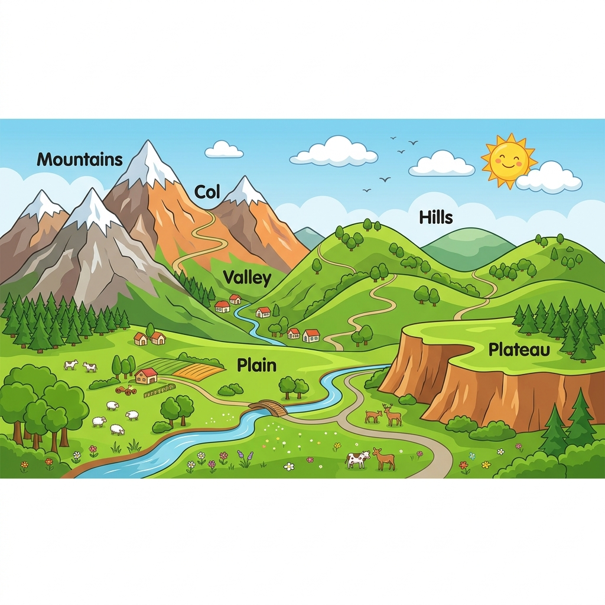
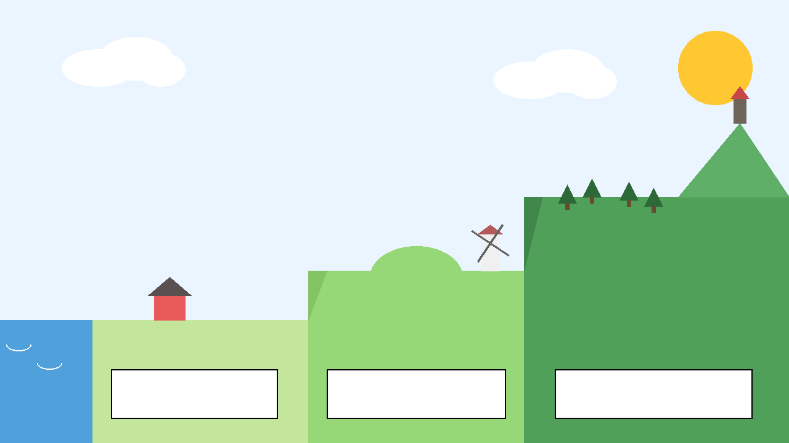
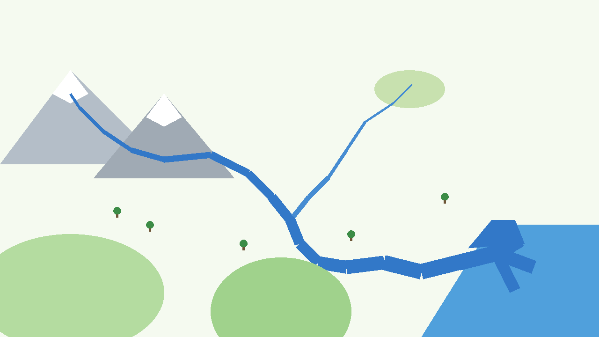

00 Bienvenue, jeune géographe !
Dans cette leçon interactive, tu vas étudier les reliefs de la Terre (les bosses et les creux) ainsi que le voyage de l'eau à travers les paysages. Prépare-toi à relever des défis pour tester tes connaissances géographiques !
Les Formes de Relief
Le Relief en Belgique
Vocabulaire de l'Eau
Les Rivières Belges
Validation Finale
- ✔ Identifier les reliefs sur un schéma (plaine, plateau, montagne, vallée).
- ✔ Placer les trois zones de relief belges sur une carte.
- ✔ Expliquer le cours d'une rivière de la source à l'embouchure.
- ✔ Distinguer un affluent d'un confluent et un fleuve d'une rivière.
- ✔ Pourquoi l'eau coule toujours vers le bas (vers la mer).
- ✔ La différence entre les vallées encaissées et non-encaissées.
- ✔ L'influence du relief sur le cours des rivières belges.
- ✔ L'importance d'un bassin versant ou bassin fluvial.
01 Le Relief : Les creux et les bosses
Le relief désigne les déformations à la surface solide de la Terre. Ces formes de paysages sont sculptées par le mouvement des plaques terrestres et par l'usure naturelle (le vent, la pluie, le gel) appelée l'érosion.
Clique sur les ronds rouges pour découvrir les définitions des paysages.

Formes de relief découvertes : 0 / 6
Clique sur un numéro
Parcours le paysage pour identifier les caractéristiques de chaque forme de relief.
Encaissée : Une vallée resserrée entre des versants très raides (caractéristique des rivières sur les plateaux).
02 Le Relief de la Belgique : Les 3 Paliers
Le relief de la Belgique s'élève progressivement de la mer du Nord (au nord-ouest) vers l'Ardenne (au sud-est). Il se divise en trois grandes zones d'altitudes appelées « paliers ».
1. Basse Belgique
Altitude : 0 à 100 mètres
Comprend la Plaine maritime (les polders), la Flandre et la Campine. Le paysage y est très plat ou légèrement ondulé. Le sol est sablonneux ou argileux.
2. Moyenne Belgique
Altitude : 100 à 200 mètres
Comprend les plateaux de Hesbaye, de Brabant et du Hainaut. C'est une région de collines douces et de plateaux recouverts de limon, une terre très fertile.
3. Haute Belgique
Altitude : 200 à 694 mètres
Comprend le Condroz, la Famenne, l'Ardenne et la Lorraine Belge. C'est le palier le plus haut et le plus boisé, avec de profondes vallées rocheuses. Point culminant : Signal de Botrange (694 m).
Associe chaque lieu ou caractéristique de Belgique à son palier de relief correspondant.
Le Signal de Botrange (694 m)
Le point le plus haut de notre pays, dans les Hautes Fagnes.
Les Polders de La Panne
Terres plates reprises sur la mer du Nord, juste à la frontière française.
Les plaines de Hesbaye
De grands champs de cultures fertiles avec un sol limoneux, à 140 m d'altitude.
Le Mont Kemmel (156 m)
Une colline sablo-limoneuse isolée en Flandre-Occidentale.
Baraque de Fraiture (652 m)
Un grand plateau rocheux et forestier situé au nord de Bastogne.
La Plage d'Ostende
Bande de sable au niveau zéro de la mer du Nord.
Vallée de l'Ourthe
Région de rochers escarpés et de descentes rapides de kayak.
Les collines du Brabant
Les douces pentes du Lion de Waterloo, autour de 120 m d'altitude.
Observe la coupe transversale simplifiée du relief de la Belgique de l'ouest vers l'est.

03 Le Vocabulaire Hydrographique (Le trajet de l'eau)
L'eau de pluie qui tombe sur terre s'écoule toujours vers le point le plus bas pour rejoindre la mer. Tout au long de ce voyage, elle dessine des cours d'eau. Il est essentiel d'en connaître les différents éléments.
Clique sur les ronds rouges pour découvrir les étapes clés de la rivière.

Organes hydrographiques découverts : 0 / 6
Clique sur un numéro
Parcours le schéma de la source à la mer pour comprendre le voyage de l'eau.
Tourne le dos à la source (regarde vers la mer/l'aval) : ta main droite indique la rive droite, ta main gauche la rive gauche !
Clique sur une étiquette bleue à gauche, puis associe-la à sa définition à droite.
Éléments
Définitions
04 Les Rivières et les Fleuves de Belgique
La Belgique est traversée par de nombreux cours d'eau, qui appartiennent presque tous au bassin de l'un de nos trois fleuves principaux : la Meuse, l'Escaut et l'Yser.
Source : France (Plateau de Langres).
Villes traversées : Dinant, Namur, Liège.
Embouchure : Mer du Nord (aux Pays-Bas).
Ses affluents belges : La Semois, la Lesse, la Sambre, l'Ourthe (qui reçoit la Vesdre et l'Amblève).
Source : France (Picardie).
Villes traversées : Tournai, Audenarde, Gand, Anvers.
Embouchure : Mer du Nord (aux Pays-Bas).
Ses affluents belges : La Lys, la Dendre, la Senne (à Bruxelles), le Rupel.
Source : Nord de la France.
Villes traversées : Diksmuide.
Embouchure : Mer du Nord à Nieuwpoort.
Particularité : C'est le seul fleuve qui se jette directement dans la mer sur le territoire de la Belgique !
À l'aide de l'Atlas de base ou des fiches ci-dessus, réponds aux questions de l'enquête.
05 Évaluation Finale : Relief et Hydrographie
Es-tu prêt à tester tes connaissances de géographe ? Réponds à ces 10 questions pour valider ta ceinture de chercheur de la Classe de Mr Lejoly.
1. Quel est le point le plus haut (point culminant) de la Belgique ?
2. Quel type de cours d'eau se jette directement dans la mer ou l'océan ?
3. Dans quelle zone de relief de la Belgique l'altitude est-elle comprise entre 100 et 200 mètres ?
4. Comment s'appelle le point où deux rivières se rejoignent ?
5. Quelle partie du cours d'eau se situe vers le haut, c'est-à-dire près de sa source ?
6. Quel fleuve belge a son embouchure à Nieuwpoort en Belgique ?
7. Qu'est-ce qu'un méandre ?
8. Comment appelle-t-on une vallée très resserrée entre deux montagnes ou plateaux ?
9. Si tu es sur un bateau et que tu regardes vers l'embouchure (aval), où est la rive gauche ?
10. Quelle terre est caractérisée par une altitude élevée mais une surface plate ?